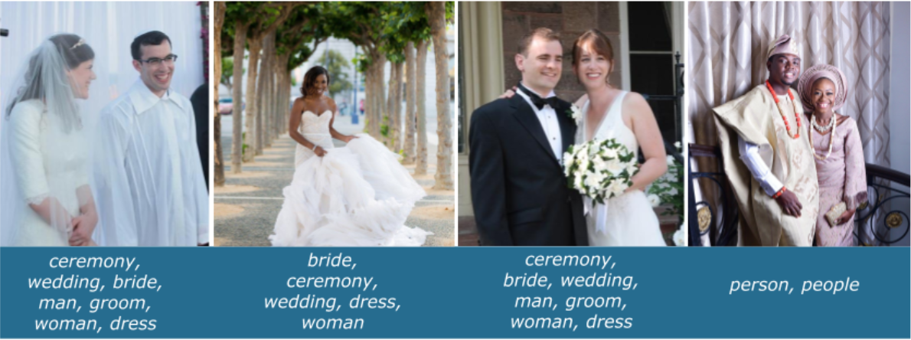

Content from Welcome
Last updated on 2024-11-14 | Edit this page
Estimated time: 5 minutes
Overview
Questions
- Who is this lesson for?
- What will we be covering in this lesson?
- What will we not be covering in this lesson?
Objectives
- Recognise what the intended target audience is for this lesson
- Recognise previous skills required to undertake this lesson
Who is this lesson for?
There is a growing interest in the application of Artificial intelligence (AI) and Machine Learning in the GLAM (Galleries, Libraries, Archives, and Museums) sector. These technologies offer many potential benefits to the cultural sector but also raises challenges and difficult questions.
Our aim with this lesson is to empower GLAM staff with the foundation to support, participate in and begin to undertake in their own right, machine learning based research and projects with heritage collections.
Library Carpentry lessons are for people working in library- and information-related roles. See Our Audience and Our Learner Profiles (Draft) for more information.
What will we be covering in this lesson?
This lesson will provide a high-level conceptual introduction to AI and machine learning with particular emphasis on applications in, and implications for, the GLAM context.
After following this lesson, learners will be able to:
- Explain and differentiate key terms, phrases, and concepts associated with AI and Machine Learning in GLAM
- Describe ways in which AI is being innovatively used in the cultural heritage context today
- Identify what kinds of tasks machine learning models excel at in GLAM applications
- Reflect on ethical implications of applying machine learning to cultural heritage collections and discuss potential mitigation strategies
- Summarise the practical, technical steps involved in undertaking machine learning projects
- Identify additional resources on AI and Machine Learning in GLAM
What will we not be covering in this lesson?
- This lesson will not require coding, statistics or maths
Key Points
- Intro to AI for GLAM is for staff working in the GLAM (Galleries, Libraries, Archives, and Museums) sector.
- The lesson is a high-level conceptual introduction to AI and machine learning that will empower GLAM staff to apply those technologies within their own institutions and collections.
- This lesson will not cover coding, statistics or maths.
Content from Artificial Intelligence (AI) and Machine Learning (ML) in a nutshell
Last updated on 2024-11-14 | Edit this page
Estimated time: 0 minutes
Overview
Questions
- What is a brief history of the field of (AI) and Machine Learning (ML)?
- What do we mean by Artificial Intelligence and Machine Learning? How are they defined?
Objectives
- Understand Machine Learning as a subfield of AI and name two others
- Name four types and machine learning and describe the difference between supervised and unsupervised learning
- Describe the difference between a model of data, and a model trained on data
Artificial Intelligence and Machine Learning
The field of Artificial Intelligence has been around since the 1950s (Dartmouth Conference, 1956). It is a broad topic which encompasses a number of sub-fields including but not limited to: Logic, Probability, Knowledge Representation, and Machine Learning.
This figure shows how a system based on Artificial Intelligence might function:
The system accepts an input, performs some inference about what the input represents, performs some reasoning about the inferences made based on prior knowledge, and finally decides on an action.
From logic to learning
The history of Logic stretches all the way back to The Organon of Aristotle (Organon) and was formalised as a mathematical discipline by George Boole in the 19th century (hence the name Boolean Logic). With logic we can write rules to reason about data or make decisions.
- “It is raining therefore I will carry an umbrella”.
Logical rules are based on things being True or False but the world is not so clear cut. Probability lets us add doubt and uncertainty:
- “It might rain today, should I take an umbrella?”.
With logical rules and probability we can solve quite complex tasks, but there are limits:
- “Which paintings in our collection have umbrellas in them?”.
Take a minute to think of how you would describe an umbrella using a set of rules:
- What colour is it?
- What shape is it?
- How big is it?
- What difference does it make if it is up or down?
- Is a parasol an umbrella?
Describing something as intuitively simple as an umbrella is difficult because although we have a rough conceptual idea there isn’t a fixed physical description. Even if you break it into component parts you still need to define them - what is a handle? what is a canopy? It becomes even more complicated if you try to specify the description in a way that a computer can interpret. Thankfully Machine Learning can come to our rescue.
What is Machine learning?
Machine Learning is a set of technologies and methods for finding rules when they are too complex to define. They are systems which find rules, learn, and make predictions from data without being explicitely programmed to do so.
Activity
Which of the following do you think would use Machine Learning?
- Counting the number of people in a museum using information from entry and exit barriers.
- A search system that looks for images similar to a user submitted sketch.
- A system that recommends library books based on what other users have ordered.
- A queueing system that spreads people evenly between 5 ticket booths
- A program which extracts names from documents by finding all capitalised words and checking them against a list of known names
- A system which turns digitised handwritten documents into searchable text
- A robot which cleans the vases in a museum without bumping into them or breaking them
- b, c, f, and g are all examples where machine learning would be needed. The others could all be achieved through simple and easily defined rules.
There are four types of machine learning, and in this lesson we will focus on the first two:
- Supervised - the system is given data that is categorised and labeled and asked to learn by example to make predictions on totally new data it has never seen before
- Unsupervised - given data that has not been categorised and labeled and asked to put it into groups (find patterns) without guidance
- Semi-supervised - a combination of supervised and unsupervised
- Reinforcement - learns about the world by interacting with its environment (example: self-driving cars and AlphaGo)
The primary task of Machine Learning is prediction.
A prediction may be a numerical value: how much will temperature control in the archive cost if we have a hot summer? how many days will library borrowers keep books for? Or it may be a classification or label: which paintings are of animals/architecture/people? which documents should be classified as sensitive?
Note
Callout
Predicting a numerical value is known as Regression. The term Regression was coined by Francis Galton in the 19th century to describe a biological phenomenon. The phenomenon was that the heights of descendants of tall ancestors tend to regress down towards a normal average (a phenomenon also known as regression toward the mean). (Regression Analysis).
Imagine you want to go on holiday next month. Imagine! You would like to know what the temperature will be on a small island that has no weather information. To do this you find the following information about other countries around the world: latitude, longitude, month, average temperature. Now you can use a machine learning technique called Regression to predict the temperature at your potential destination using its lat/lon and the month. This is a prediction task.
An alternative approach would be to make a list of destinations you like, and those you don’t like. Gather the same information of lat/lon, month and temperature for a sample of countries, but this time add a ‘Yes’ or ‘No’ for whether you like them or not. You can now choose one of many machine learning classification algorithms to label the rest of the world’s countries Yes or No. This is a binary (there are two categories) classification task.
Supervised vs unsupervised learning
The previous example was of supervised learning. In the supervised scenario a set of labelled examples are passed to a machine learning classifier which learns to identify relationships between features of the data and the labels, or a numerical output. The table shows some examples of features and labels for some supervised learning tasks:
| Task | Application | Features | Output | Example learned relationship |
|---|---|---|---|---|
| Classification | Sentiment analysis | Words in a sentence | ‘Positive’ or ‘Negative’ | ‘glad’ or ‘happy’ weighted towards ‘Positive’ label |
| Classification | Seasonal paintings | Images of paintings | ‘Spring’,‘Summer’,‘Autumn’,‘Winter’ | Red leaves more predictive of Autumn label |
| Prediction | Child height estimate | Age of child | number in centimetres | Height increases as age increases |
Unsupervised learning is not given any examples. Instead a target is suggested and the algorithm groups the data based on that target. The target is usually the number of groups wanted, and the algorithm will place data points into each group in order to maximum the similarity of group members. The following activity aims to give you an intuition for clustering, a commonly used form of unsupervised learning.
Activity
Imagine there are 6 people in a workshop and you need to split them evenly between 2 tables based on the similarity of their interests. Their interests are listed below in order of preference. How would you divide them into 2 tables with 3 people on each table?
- Person A - politics, sport, nature
- Person B - walking, cooking, quiz shows
- Person C - baking, sewing, athletics
- Person D - newspapers, biographies, history
- Person E - football, rugby, cricket
- Person F - fine dining, pub quizzes, bird watching
There isn’t a right answer to this challenge. In fact an algorithm with no other information other than the words above would probably distribute them randomly. To perform the task it would need further information that could provide semantic relationships between the words. That may it could establish that sport is similar to football, rugby and cricket, and fine dining and cooking are related. Without that information they are just meaningless strings to a computer. You should have seen that there are multiple solutions and when using unsupervised methods you have little influence over which is chosen.
Each paradigm has its advantages and disadvantages. Unsupervised learning is a straightforward way of identifying clusters of similar records in a set of data making it ideal for gaining a high level view of a new dataset. However, choosing the right number of clusters can be difficult and there is no way to control the criteria for how clusters are formed. In the above exercise we saw a number of types of activity (physical, food related, current affairs, natural world), with some possibly fitting into two categories. In supervised learning we define the categories in advance giving us control over the outputs. The downside is the cost of labelling our data. Consider the effort involved in the following tasks:
- Transcribing 100 pages of handwritten medieval documents
- Tagging each of 10000 images if they contain an umbrella
- Linking together daily visitor data with weather data currently held on someone else’s website
Activity
Fill in the blanks with either “Supervised Learning”, “Unsupervised Learning”, “Prediction” or “Classification”
- Estimating how much money a customer will spend in the museum shop is a _____ task
- A program to decide if a customer is a ‘big spender’ or a ‘browser’ would use a _____ algorithm
- Identifying four types of library visitor is an example of _____
- _____ requires labelled examples
- Estimating how much money a customer will spend in the museum shop is a Prediction task
- A program to decide if a customer is a ‘big spender’ or a ‘browser’ would use a Classification algorithm
- Identifying four types of library visitor is an example of Unsupervised Learning
- Supervised Learning requires labelled examples
Key Points
- Machine Learning is a subfield of AI which identifies patterns in data
- Supervised learning algorithms learn by example
- Unsupervised learning algorithms put data into groups of similar objects or records
Content from Machine Learning Modelling Concepts
Last updated on 2024-11-14 | Edit this page
Estimated time: 0 minutes
Overview
Questions
- What are models and algorithms?
- What factors should we consider when choosing a machine learning model?
Objectives
- Understand the two definitions of model, and what an algorithm does
- Describe the difference between a model of data, and a model trained on data
- Understand the term Explainable AI
- Explain the purpose of feature engineering
Models and Algorithms
There is a lot of jargon and terminology in Machine Learning, and it can be confusing to a newcomer especially when some terms have more than one meaning. The term model is one such example. In this episode we will present two definitions of model, and also introduce the term algorithm.
Modelling the world
Whether the task is prediction or classification, the method supervised or unsupervised, the underlying principle is one of modelling the world through data.
We as humans are making models all the time. A quick look out the window and our in-built weather model, learned from past soakings, helps us make the umbrella decision. At school we learned one of the simplest models for numerical data - the average. An average is an example of a conceptual model, a generalised way to describe a real world process. In this case it represents the typical value in some population. To apply this model to a real world problem we need data and an algorithm. Working within the constraints of the conceptual model the algorithm will adjust a set of numerical parameters until it achieves the best it can against some optimisation target. It uses the data to help achieve this goal. The final values of the parameters when the target is met are a trained model. The trained model provides a mathematical process for converting an input to an output.
If I were to try to guess the height of the next person to walk through the door, the average would be a good conceptual model to use. The algorithm that you probably learned as a child is to add up all the heights and then divide by the number of measurements. If the data we had available was heights of 19 year old Finnish people then the trained model would, given any input, return a value of 173.5cm (according to Wikipedia) .
It will be wrong a lot of the time but it will be the best single parameter model available. A famous aphorism in the statistical and machine learning communities says:
“All models are wrong, some are useful” - George Box (1976)
In machine learning we have lots of models to choose from, and choosing a model depends on the type of data, the amount of data, the purpose, and a certain amount of pragmatism.
Consider the following scenarios:
- We want to predict online shop visitors based on the number of marketing tweets about the shop sent out in a month
- Assuming a straight line relationship, we need a model with two parameters. The first parameter is the expected visitors when there are no tweets sent. The second is the slope - how much visitors increases (or decreases) with each tweet.
- The conceptual model is a linear model, and with a few past examples of visitor numbers and tweets, we can use the least squares algorithm to find the parameters which best predict the effect of increased tweets. The trained model consists of the two parameters and a formula using them to convert tweets into visitors.
- A straight line only goes in one direction. In reality we would expect the data to plateau out, or even decline, after a certain number of tweets. We might say that the model underfits the data, it is too simplistic. A model with an extra parameter or two would better capture the diminishing returns. If we used a model with 100 parameters it would find the exact relationship between tweets and visitors in the training data but it wouldn’t generalise well to new data. We call this overfitting.
- With very little training data available the simpler model may perform better because there isn’t enough to learn a more complex relationship from.
Callout
In machine learning we always work with two sets of data. The training data is used to train the model, the testing data is used to verify whether the model will generalise to unseen data. It is important that the training data and testing data are both representative of the real world data we will use our model against in an application but they must not overlap with each other. The process of training a model is often called the Data Science Lifecycle. It is an iterative process of finding the best model using training data. The very end of this process is when the test data is used, and often in competitive situations (e.g. an academic competition, or private companies competing for a tender) the test data is not seen by the data scientists at all.
- We want to translate Medieval Latin text into English
- In this case we need a conceptual model which maps one sequence (a Latin sentence), to another (an English sentence). The trained model may be a neural network which consists of millions of parameters stored in matrices. These parameters are necessary to capture all the nuances of language translation. The algorithm used will most likely be gradient descent which is an efficient method of adjusting millions of parameters as training data is fed through the algorithm. What the algorithm does is find the parameter values which best map input to output, with best meaning the ones which make the fewest mistakes.
- With millions of parameters we need thousands or millions of training examples. This has both a human cost in creating the training data, and a computational (energy) cost
Explainable AI
One important consideration when choosing a model may be to do with explaining results. In the first scenario, above, we can explain the whole model. “Every time we send a tweet, online visitors increase by …”. In the Latin translation scenario we can’t describe the model in those terms. However, we may be able to see which word(s) in the input were most influential in deciding each word in the output. This is known as Explainable AI and is a big topic in the fields of AI and Human Computer Interaction. In some scenarios it may be essential to be able to explain exactly why a decision was made, so a model which allows us to spell out the exact calculation has to be used. This may involve losing out on the more accurate results of a model that can not be explained. Explainable AI aims to remove the need for such compromises. As well as explaining individual decisions we need to understand the behaviour of our model on a more systemic level. The episode on bias will address the issues we face when this is not done correctly.
Getting the best out of the data
Although a lot is said about algorithms when discussing machine learning, the data is the most important part. A model trained on 19 year olds will be no good at predicting the heights of primary school children. Machine learning algorithms expect numerical inputs but we can have a lot of influence in how those inputs are derived and even add in our own knowledge.
Feature engineering
One of the trends seen in machine learning, especially in the field of deep learning is that the more training data available, the better the results, and the more complex problems can be solved. While this is true, it is not helpful if you don’t have much training data available and need to work with simpler conceptual models but still want to solve complex problems.
One solution to this is to use expert domain knowledge of the data to augment it with additional features. This process is known as Feature engineering. As a worked example, we will consider a column of dates. To a computer a date (without the time portion) is a sequential number which represents the number of days since a certain fixed point in time (e.g. 1st January 1970). As a number it doesn’t contain any of the periodic information that a date in other formats does. As domain experts we can add some insight to the machine learning process by representing a date in different ways.
If my task was to predict visitor numbers to a museum I might convert a date to a weekday/weekend indicator, or match it to a school holiday calendar. The following diagram shows several different representations of the same date:
Embeddings
Machine Learning algorithms require numerical inputs, which often means we need to convert our data into numerical form. In the case of text this can be problematic. One option is have each word as a feature but then our model can only use words appearing in the training data. Also we lose the semantic nature of words - for example, the words car and automobile are treated as independent features. Word embeddings allow us to capture relationships between words by placing them in a large multi-dimensional (numerical) space, such that words with similar meanings are in some way closer to each other. The multi-dimensional nature allows for the multiple meanings of many words. For example, Date is a representation of time, a fruit, and an evening out with dinner.
To illustrate creating word embeddings, here is a simple two dimensional representation of different fruits. Each fruit is represented by two numbers: their ‘roundness’, and their colour on a ‘rainbow’ scale (Red=0.0, Violet=1.0). In reality we wouldn’t define the dimensions, and they wouldn’t be interpretable in this way. Now if we wanted to represent Kiwi numerically it would be [0.7,0.5]. We also see that Banana is most similar to Lemon, so perhaps we would need to add a ‘Citrus’ dimension for a better representation.
| 0.0 | 0.4 | 0.7 | 1.0 | |
|---|---|---|---|---|
| R (0.0) | Strawberry | |||
| O (0.16) | Orange | |||
| Y (0.33) | Banana | Lemon | ||
| G (0.5) | Kiwi | |||
| B (0.66) | Blueberry | |||
| I (0.83) | ||||
| V (1.0) | Plum |
Key Points
- Conceptual models describe a general relationship between inputs and outputs
- Trained models are a numerical realisation of a conceptual model learned from data
- Explainable AI is an essential tool for understanding complex models
Content from What is Machine Learning good at?
Last updated on 2024-11-14 | Edit this page
Estimated time: 40 minutes
Overview
Questions
- What are the tasks where machine learning excels?
Objectives
- Identify the types of data that machine learning can work with.
- Decide when deep learning is an appropriate tool for a machine learning task, and know what its downsides can be.
- NULL
GLAM data types for Machine Learning
- Tabular Data
- Images (Computer Vision)
- Text (Natural Language Processing)
Classical Machine Learning and Deep Learning
In the previous episoode, most of our machine learning examples dealt with tabular data. There are numerous different algorithms that work with tabular data, and they all have strengths and weaknesses for different tasks and types and sizes of data. (See the for a good overview of which algorithms you can use for a given task).

Computer Vision
Computer Vision (often abbreviated to CV) has been around since the early days of AI but has been revolutionised in recent years by so called Deep Learning models. The most common of these models is called a Convolutional Neural Network (CNN) and is capable of identifying complex patterns in images. A convolution is inspired by our own visual system. Imagine you are travelling at high speed and trying to avoid obstacles. Your visual system doesn’t have time to work out the fine details of the objects in front of you, it just needs to detect shapes. Convolutions work in that way too. One convolution may detect horizontal edges, another vertical edges, yet another corners, and so on. They work over very small portions of an image, as little as 3x3 pixel squares. A neural network is a complex machine learning model which we use when we need to go beyond drawing lines between points (although they can do that too). It is built of layers of numbers and data is passed through the layers until an answer of some sort comes out of the other end. In a CNN the first layer find the edges, the second layer starts to find patterns of connected edges, the third layer may start to detect shapes, and we keep going until the final layer when a classification is decided on based on all the patterns found in the image. A Deep Convolutional Neural Network (quite a mouthful) is just the name for a CNN with lots of layers (there can be hundreds). The deeper the network, the more complex features it can identify in an image - from edges, to shapes, to patterns, to textures. However, as we learned in the linear model section, complexity comes at a cost. A deep network may need to see millions of labelled images to perform well, and they can take many hours, days, or even weeks to train.
Tensorflow Playground
You can play with a small neural network and see convolutions in action at Tensorflow Playground. You don’t need to know anything about neural networks, just try things out and see what happens - sometimes even the professionals do that!
Computer Vision tasks
- Image classification: label images according to a set of categories
- Object detection: identify buildings, people, vehicles or animals in images
Thinking about object detection
At the beginning of the episode we thought about how we might build a set of rules to describe an umbrella. Now we know that with machine learning we can provide an algorithm with images containing umbrellas, and images without umbrellas.
Take a look at pictures labelled as umbrellas in the image collections of the Smithsonian Institute, British Library, and The National Archives (UK).
Now think back to some of the questions we asked earlier:
- Is colour important?
- What compromises do you think you’d have to make if you could only label small amounts of training data?
- The umbrella classifier needs counter examples - pictures without umbrellas - what kind of images would you use for those? [Hint: think of things which might be mistaken for umbrellas]
Activity
Now that you have learned the types of computer vision tasks where machine learning excels, what are some things you might try to do with this image?
Imagine you had overhead views of each tray of bird specimens. How might object detection help speed up digitisation?
Natural Language Processing
In Computer Vision we started with a grid of numbers which is the way that images are represented in a computer. Machine Learning algorithms need numerical inputs which means that before we can work with text we need to convert it into a numerical form. This means there are two stages to modelling our data, each introducing assumptions about the world which impact the tasks we can accomplish, and the computational and data resource needed to accomplish them.
Stage one is to model the words in our text. The simplest way is to build a vocabulary and then count how many times each word in the vocabulary appears in each document. The vocabulary is generally built from the training corpus because the classifier needs at least one example of each word. In recent years state of the art systems have used a representation of words called word embeddings. Conceptually embeddings are numerical representations of words which allow us to find semantically similar words. This means that if our training corpus contains the words ‘tree’, ‘plant’ and ‘flower’, then applying the model to a document containing the word ‘bush’ will still work even though it wasn’t in the training corpus. Word embeddings are often trained on a very large corpus of documents (e.g. Wikipedia) and made publicly available. While this is convenient it is important to bear in mind that the documents they’re trained on may not be representative of the language encountered in historical documents.
The second stage is to model the language. This doesn’t mean creating a complex linguistic model, but thinking about simplifying assumptions about the text to reduce computational complexity. The simplest language model considers all words in a sentence to be independent of each other.
- Do you think that is a reasonable assumption?
If you were formulating a theory of language it would be a bad assumption, as it suggests sentences are random sets of words. However, for many real world machine learning tasks it works quite well. The term bag of words is often used to describe such a model. One way of thinking of this model of language is to imagine writing a review of a book. In front of you are two bags, one marked ‘Positive’ and the other ‘Negative’. If you like the book you will reach into the ‘Positive’ bag for words to use in your review, and if you don’t like it then you choose words from the ‘Negative’ bag. Now a Machine Learning algorithm trying to learn a model for identifying whether reviews are positive or negative is effectively trying to establish which bag the words in the review came from. The reviews containing words like ‘Interesting’, ‘Exciting’, ‘Delightful’ are more likely to be positive, while ‘Boring’ and ‘Uninteresting’ would suggest the negative bag was used. The simplicity of the model allows us to use less training data and would be computationally efficient to build a model.
Of course we know that language is more nuanced than that.
- “The book was not boring at all” - this sentence is positive despite the word ‘boring’ appearing in it.
- “The author’s other books were exciting but this was not” - this sentence is negative despite containing ‘exciting’
In this case we can increase the complexity of our language model to use pairs of words, which would mean ‘not boring’ becomes a feature in the input data. However, remember that whenever we increase complexity we generally need more data.
Modern deep learning models are able to model sentences, or even paragraphs and documents, as strings of related words. This is essential for tasks such as machine translation where word order changes between languages. It is also necessary if we want the machine to make sense of long passages where perhaps the subject of the sentence was mentioned at the beginning but is referred to by a pronoun later on in the document.
- Otto met Nancy at the park. It was a beautiful sunny day and he was looking forward to their picnic together.
The kind of machine learning model needed to make the connection between ‘their’ and ‘Otto and Nancy’ is called a Recurrent Neural Network (RNN). Recurrent just means that it models its inputs as a sequence and is able to make connections between items in the sequence. As always, there is a trade off. Complex deep learning models require a lot of training data, millions of lines of text to perform well. This makes sense because to identify relationships between words it must see examples of words used in different contexts.
Activity
Which of these typical Natural Language Processing tasks do you think requires a complex language model, and which could be achieved with a simpler one.
- Sentiment analysis: Is a sentence positive or negative?
- Machine Translation: converting text in one language, to another
- Spam detection
- Entity extraction: identifying people, places, organisations in text
- Text generation: generating text, maybe a poem, in the style of an author
- Question answering: interpreting a written question and retrieving the answer from a database
- Sentiment analysis: this can work with bag of words but things like sarcasm are difficult to detect.
- Machine Translation: definitely requires a complex model due to changes in word order, idiomatic phrases that don’t translate well, and translations not being a one to one mapping of words.
- Spam detection: simple models work remarkably well as spam is often full of obvious keywords
- Entity extraction: named entities often fit standard patterns so a simple model works quite well
- Text generation: generating plausible looking text requires a huge amount of training data but not necessarily a complex model. Generating text that makes sense is a much more complex problem.
- Question answering: this can be achieved with a simple model. It is as much about identifying patterns of questions, and depends on how controlled the domain of questions is. For example, answering “What time is the next train to London?” does not require a complex language model.
Computer Vision meets Natural Language Processing
One of the state of the art applications of machine learning seen in cultural heritage at the moment is Handwritten Text Recognition (HTR). The idea is to convert digitised handwritten documents into searchable and machine readable text. To achieve this HTR uses a combination of Computer Vision and Natural Language Processing. A Convolutional Neural Network is used to work out the letter shapes in each word. Since handwriting can be tricky and ambiguous the best it can do is identify possible letters from the shapes it has identified. A Recurrent Neural Network is then used to work out the most likely word. Since it has a sentence level language model it does this by taking into account words in the whole line of text so that it can use context to work out the most likely word. By balancing the prediction of the Computer Vision model with the language model it is still able to output words that were never seen in the training data.
Transfer Learning
In most computer vision classification models, the input image goes through hundreds of layers, which results in a “feature vector” (sometimes referred to as an embedding). This feature vector is then classified into a limited number of classes.
If you want to use your own classes, you can take those vectors that come from a general case model, and re-train the classification step.
You can also “fine-tune” the weights in the previous layers of the model.
Unsupervised Learning with Feature Vectors
You can take feature vectors generated by pre-built models, and calculate distances between them, and produce clusterings.
Key Points
- First key point. Brief Answer to questions. (FIXME)
Content from Understanding and managing bias
Last updated on 2024-11-14 | Edit this page
Estimated time: 0 minutes
Overview
Questions
- What are common types of bias and their effect in machine learning?
- At what points can bias enter the machine learning pipeline?
- Can we manage bias? Some lessons from GLAM
Objectives
- Define bias in the context of machine learning
- Identify common types of bias and how and at what stages these may impact model predictions
- Give examples of a range of bias mitigation strategies available to GLAM staff
FIXME
Bias in machine learning
Though AI and machine learning (ML) systems may appear to us as objective, dealing solely in facts and numbers, free from troublesome human proclivities in their decision making, there are abundant opportunities for human bias to enter ML systems at all stages of the pipeline.
Human bias can have a broad and complex range of effects on the classification and predictions of models, with consequences of varying degrees. Bias in AI can be understood in most general terms as an error where incorrect assumptions lead to systematically prejudiced results.
When we typically hear about bias in AI these days, particularly in the news, it is most often presented and understood in the context of societal prejudice and discrimination, where human prejudice in the development and application of algorithms results in the perpetuation of unfairness, inequities, and stereotypes of the real world.
Predictive policing systems are a canonical illustration of this. Such systems are being relied upon as tools for courts to use in sentencing, aiming to predict the likelihood of defendants committing a future crime. Analysis by ProPublica in 2016 of one system used widely throughout the United States, Correctional Offender Management Profiling for Alternative Sanctions (COMPAS) tool, uncovered significant racial disparity between the system predictions for white and black defendants. The COMPAS tool assigns scores from 1 to 10 to a defendent based on 100 or so factors such as age, sex and criminal history (although notably race has been excluded). While overall, “Northpointe’s assessment tool correctly predicts recidivism 61 percent of the time…blacks are almost twice as likely as whites to be labeled a higher risk but not actually re-offend. It makes the opposite mistake among whites: They are much more likely than blacks to be labeled lower risk but go on to commit other crimes. (Source: ProPublica analysis of data from Broward County, Fla.)”. Interestingly, a subsequent study has revealed that the COMPAS tool was actually no better at predicting crimes than random people on the internet.
Bias may exist in other forms, such as an image dataset that inadvertently contains objects that always happen to appear in the center of the image, making it hard for a classifier to recognise objects that are not in the center of images.
Bias may even be introduced to an algorithm in order to correct an unfair model. Consider an image search algorithm, based on real world data where a majority of men are CEOs. A user searching for “CEO” will find images of primarily men, and a good bias may be introduced in order to insure proper representation of a diversity of CEOs.
In whatever form it takes, and we’ll cover more of these forms in this episode, it is crucial for model builders to be able to identify bias and manage it.
“Although neural networks might be said to write their own programs, they do so towards goals set by humans, using data collected for human purposes. If the data is skewed, even by accident, the computers will amplify injustice.” — The Guardian
Activity
Consider this riddle: A father and son get in a car crash and are rushed to the hospital. The father dies. The boy is taken to the operating room and the surgeon says, “I can’t operate on this boy, because he’s my son.” How is this possible?
The surgeon is a woman. In research conducted on 197 BU psychology students (where women outnumbered men two-to-one) and 103 children, ages 7 to 17, only a small minority of subjects—15 percent of the children and 14 percent of the BU students—came up with this answer. Of self-described feminists in the student group, a majority, 78 percent, did not guess the surgeon was the mother. This illustrates how a training dataset may unintentionally come to encode societal gender bias through human applied labels such as “Surgeon” vs. “Female Surgeon”.
Note
Data bias here is not to be confused with the “bias term” also used in machine learning or statistical terms such as bias-variance trade-off.
Common bias types in machine learning
Let’s take a closer look at some specific and common types of bias that may manifest in the undertaking of machine learning approaches at your institution. This is of course only a small handful of potential sources of bias that may affect our judgment and skew a model’s predictions. It’s important for model builders to be vigilant about finding and remedying bias in whatever form it may enter the machine learning pipeline.
| Type | Definition | Example |
|---|---|---|
| Prejudice bias | Arises when data incorporates cultural, race, gender or stereotypes it should be ignorant of | A model is designed to differentiate between men and women in a museum’s photograph collection. The training data contains more pictures of women in kitchens than men in kitchens, or more pictures of men coding than women, then the algorithm is trained to make incorrect inferences about the gender of people engaged in those activities due to prejudices that occur in the real world, represented in the data. |
| Selection bias | Introduced by the selection of individuals, groups or data for analysis in such a way that proper randomization is not achieved, thereby ensuring that the sample obtained is not representative of the population intended to be analyzed | A model is trained to predict future sales of a new product line for the museum gift shop. To build the training set, the first 200 subscribers to the museum’s newsletter were offered a small gift voucher to fill in a survey. Instead of randomly targeting consumers, the dataset targets newsletter subscribers who don’t necessarily represent the museum’s potential paying customers. It’s entirely possible the newsletter subscribers population may be more inclined to be signed up to learn about free events and giveaways, while typical consumers may not be enticed by small gift vouchers or even signed up at all. |
| Confirmation bias | In the process of refining and reinforcing a models learning, unconsciously or consciously processing data in ways that confirm preexisting beliefs and hypotheses. | An engineer is building a model that predicts aggressiveness in dogs based on a variety of features (height, weight, breed, environment). The engineer had an unpleasant encounter with a hyperactive toy poodle as a child, and ever since has associated the breed with aggression. When the trained model predicted most toy poodles to be relatively docile, the engineer retrained the model several more times until it produced a result showing smaller poodles to be more violent. |
| Correlation bias | Correlation is not causation. Correlation implies the mutual relation, covariation, or association between two or more variables. It only questions whether the variable varies together or not. | The height of the father and his children is correlated, but one can’t say that the father’s height is caused by determining his children’s height on the only assumption of the hereditary factor. There are several other factors present such as environment, genetics, etc. |
| Exclusion bias | Removing data from a set that we think isn’t relevant | For example, imagine you have a dataset of customer sales in America and Canada. 98% of the customers are from America, so you choose to delete the location data thinking it is irrelevant. However, this means your model will not pick up on the fact that your Canadian customers spend two times more. |
When might human bias enter a machine learning pipeline?
There are abundant opportunities for human bias to enter ML systems at all stages of the pipeline including:
- When the study is being designed
- When datasets are constructed
- When decisions are being made to refine and reinforce a models learning
- When interpreting and applying decisions made by the model to real world scenarios
Bias arising in the study design
Some machine learning systems are quite simply built on ethically unsound foundations from the outset. A recent controversial study, Tracking historical changes in trustworthiness using machine learning analyses of facial cues in paintings, published in Nature Communications, garnered significant controversy for its proximity to the thoroughly debunked pseudoscience phrenology which aims to assess an individuals personality and (or in the case of this study, trust) based on facial structure.
Bias arising in dataset collection and construction
“It’s all too easy to forget that data is about human beings and their behaviors. Data is not an abstraction…Data encodes the stories of our lives, capturing not only our tastes and interests but also our hopes and fears. Data isn’t an abstract idea or a set of numbers or qualitative responses. It can be and is, ultimately, human. (reference)”
Data is never neutral. It is collected, managed, and organised by and about people. And the manner in which data is sourced and constructed for training sets will have important implications on your model’s output. In the simplest example, if you are aiming to build a face recognition software but only train your model on a dataset of white faces, your model is obviously going to struggle to identify faces of any other colour.
Because of the many complexities around copyright and licensing, privacy issues and high costs involved in getting access to large quantities of quality datasets, data scientists have favoured scraping what they can find freely, en masse and indiscriminately, across the internet from free sources such as Wikipedia, FlickR or Google News. Datasets collected in this manner, taken without intervention, will reflect the biases of these sources, such as a certain demographic composition (overrepresentation of young internet users from developed countries for example).
When training data is labelled (annotated), typically through some kind of crowdsourcing mechanism such as Amazon’s Mechanical Turk, and as we saw in the first activity, bias can crop up, either consciously or unconsciously, in the course of this. Whether personally undertaking or crowdsourcing your data annotation, it’s important to be aware of how different demographics and social constructs may introduce bias and implicit associations into your pipeline.
GLAM staff will be more than familiar with this phenomenon as we grapple with historical bias in library and archives descriptions. As demand for GLAM collections and catalogue data for use in machine learning increases, it is vital that model builders are made aware of the biases that may be encoded within cultural heritage data.
Activity
Consider this image and write a list of terms you would use to annotate it. Compare your outputs with your nearest neighbour(s). Discuss the differences and how this could effect a model. How might you mitigate these differences in annotations?
 The image comes from wedding photographs (donated by Googlers) for the Open Images dataset. How well did you do compared to a classifier’s label predictions (recorded below each image).
Bias arising when refining and reinforcing a models learning
We’ve talked a lot about bias that can make it into our training data, but this isn’t the only way it manifests itself in machine learning systems. As we now know from earlier in this lesson, machine learning models are refined and reinforced based on reactions to its results. In this process, there is a risk of certain outcomes being ignored and others privileged over others, skewing a models learning.
For example, A model builder is using named entity recognition across multilingual newspapers. They might determine they are satisfied when the model gets to 90% accuracy and will aim to improve to this result. However this overall accuracy can hide the fact that some particular ‘slices’ of our data might have much worse accuracy. Your overall accuracy might be very good but your model may underperform on one language. This might not be addressed by changing your data but changing how you approach training and evaluating your model.
Bias arising in the application of machine learning decisions to real world scenarios
This may be an area you might already have some awareness of as the ubiquity of machine learning systems in our lives increases, the effects of unfair, biased algorithms are starting to become more apparent. Algorithmic bias is defined as unjust, unfair, or prejudicial treatment of people related to race, income, sexual orientation, religion, gender, and other characteristics historically associated with discrimination and marginalization, when and where they manifest in algorithmic systems and algorithmically aided decision-making. Predictive policing as covered earlier is probably the most clear example of algorithmic bias. #TODO: add Amazon hiring example. Another canonical example of this is the Amazon hiring
It is imperative to be aware then that the manner in which data is collected, annotated and results applied, will have far reaching consequences for society as decisions produced by ML systems are increasingly being relied upon in real world scenarios. From seemingly benign systems like recommendation engines to predictive policing, opportunities for ML systems to perpetuate and amplify humans bias and inequality abound.
How can GLAM staff help manage bias in machine learning approaches?
Archives are the longest standing communal effort to gather human information and archive scholars have already developed the language and procedures to address and discuss many challenges pertaining to data collection such as consent, power, inclusivity, transparency, and ethics & privacy. Reference Lessons from archives: strategies for collecting sociocultural data in machine learning
The presence of bias in the classifications and predictions of machine learning is a key challenge today, but being aware of and transparent about the problem allows us to take proactive steps to mitigate their effects. For GLAM professionals, this is familiar ground and in Reference Lessons from archives: strategies for collecting sociocultural data in machine learning the authors argue that the document collection practices in archives present the ideal ethical and practical framework for mitigating bias in data collection for the field of machine learning. GLAM professionals have an opportunity to apply these tools to the management of bias.
“That means,” said Catanzaro, “that the collection and curation of data sets, the skills that you guys practice—the resources that you have access to—can enable the creation of new algorithms and new applications.”(Catanzaro, 2019, 5:30)
How else might GLAM staff actively help manage bias in machine learning approaches?
- GLAM institutions must ensure a diverse workforce-monoculture cannot effectively manage bias-diversity is not an option, it is an imperative (Responsible Operations: Data Science, Machine Learning, and AI in Libraries))
- Hold symposia focused on surfacing historic and contemporary approaches to managing bias with an explicit social and technical focusing on the challenges libraries faced in managing bias while adopting technologies like computation, the internet, and currently with data science, machine learning, and AI.
- Contribute diverse language materials, collections and texts to sources where model builders are finding their data such as Wikipedia
- Collaborate directly with computer scientists to build new diverse, curated data sets for use in machine learning (Arabic HTR)
- Enlist the help of staff with the right domain expertise to review training data construction before and after, they may see biases that you have overlooked
- When collecting and annotating data make sure to recruit diversified crowds for the task and carefully communicate instructions
- Employ toolkits for detecting and removing bias from machine learning models, for instance the IBM open sourced AI fairness 360 tool
- Consider your partnerships and collaborators closely, including ramifications of outsourcing your AI to external companies/partners
- Know your data and your model and be transparent about it. Create Datasheets and Model cards describing and documenting them in full for users
Activity
In small groups, consider the following potential machine learning project. Discuss 2-3 potential points at which bias may enter the pipeline, and questions/strategies GLAM staff might want to consider in order to manage it.
A museum is keen to make a newly acquired digitised collection of 20,000 Southeast Asian late 19th century photographs more discoverable within the main catalogue. The photographs are the work of an English traveler, and aside from captions handwritten by him, the individual photographs have very little in the way of item level description. A model will be trained to help classify the photographs (places, people, events, objects) and the new machine generated descriptive tags added to the catalogue records. To create the training set from which the model will learn, a crowdsourcing project will bet set-up asking members of the public to add their own descriptive tags to a subset of the images.
Resources Consulted & Recommended Reading
- Barbosa, N., & Chen, M. (2021). Rehumanized Crowdsourcing. Proceedings of the 2019 CHI Conference on Human Factors in Computing Systems. Dl.acm.org. Retrieved 29 March 2021, from https://dl.acm.org/doi/10.1145/3290605.3300773.
- Barlow, R. (2014). BU Research: A Riddle Reveals Depth of Gender Bias. BU Today. Boston University. Retrieved 29 March 2021, from https://www.bu.edu/articles/2014/bu-research-riddle-reveals-the-depth-of-gender-bias.
- Catanzaro, B. (2019, December 4). “Datasets make algorithms: how creating, curating, and distributing data creates modern AI.” [Video file]. Retrieved from https://library.stanford.edu/projects/fantastic-futures.
- Coleman, C. (2020). Managing Bias When Library Collections Become Data. International Journal Of Librarianship, 5(1), 8-19. https://doi.org/10.23974/ijol.2020.vol5.1.162.
- Ekowo, M. (2016). Why Numbers can be Neutral but Data Can’t. New America. Retrieved 29 March 2021, from https://www.newamerica.org/education-policy/edcentral/numbers-can-neutral-data-cant/.
- Gebru, T., Morgenstern, J., Vecchione, B., Vaughan, J., Wallach, H., Daumeé III, H., & Crawford, K. (2020). Datasheets for Datasets. arXiv.org. Retrieved 29 March 2021, from https://arxiv.org/abs/1803.09010v3.
- Hellström, T., Dignum, V., & Bensch, S. (2020). Bias in Machine Learning What is it Good (and Bad) for?. arXiv preprint. Retrieved 20 April 2021, from https://arxiv.org/abs/2004.00686v2.
- Jo, E., & Gebru, T. (2020). Lessons from archives. Proceedings Of The 2020 Conference On Fairness, Accountability, And Transparency. https://doi.org/10.1145/3351095.3372829.
- Mayson, Sandra Gabriel, Bias In, Bias Out (2019). 128 Yale Law Journal 2218, University of Georgia School of Law Legal Studies Research Paper No. 2018-35, Available at SSRN: https://ssrn.com/abstract=3257004.
- Padilla, T. (2019). Responsible Operations: Data Science, Machine Learning, and AI in Libraries. OCLC Research Position Paper. https://doi.org/10.25333/xk7z-9g97.
Key Points
- Bias occurs when a dataset is not representative of the population, it is incomplete or skewed.
- The presence of bias in the classifications and predictions of machine learning may have far reaching consequences for society, amplifying inequality and unfairness.
- There are abundant opportunities for bias to enter ML systems at all stages of the pipeline including when datasets are constructed, when a models learning is refined and reinforced, and when predictions made by a model are interpreted by humans and applied to real world scenarios
- There are a range of strategies available today to help mitigate bias.
Content from Applying Machine Learning
Last updated on 2024-11-14 | Edit this page
Estimated time: 0 minutes
Overview
Questions
- What are the key steps involved in a machine learning project?
- What skills and people should be involved in a machine learning project?
- How can machine learning models predictions be utilised by an organization?
Objectives
- Describe the main stages involved in a machine learning project
- Identify areas in which machine learning could be used to help address a “business” need
- Be able to give two examples of how machine learning model predictions can be utilised to make decisions
- Be able to highlight at least one reason why you should monitor the predictions made by a machine learning model
FIXME
Episode Introduction
In this episode, we turn to the question of how we can apply machine learning in a GLAM setting. We’ll move through the process of applying machine learning step-by-step to make these stages easier to follow. In reality, this process will rarely be completely linear and you likely need to iterate on many steps of the process.
Machine Learning projects
A report has suggested that 85% of AI projects “ultimately fail to deliver on their intended promises to business”. Successfully applying machine learning in a GLAM setting involves a range of challenges including; data quality, identifying ethical concerns building or adapting machine learning models, internal and external communication.
What does failure mean in your institution?
What do you think is the most likely reason an ML project would ‘fail’ in your institution. What would ‘failing’ mean?
The stages of a machine learning project will vary depending on the institution, problem being tackled, team etc. However, as a broad overview, we can think of many projects roughly going through the following steps:
- Defining the “business” need
- Creating a project team
- Gathering data to develop or test the model with
- Define a metric to optimise
- Creating a baseline to benchmark machine learning approaches against
- Creating, adapting or using an existing model
- Using the model
- Monitoring the model
We’ll move through these steps in the course of this episode.
What is the “business” need?
There are many possible uses of Machine Learning in a GLAM context. These can range from projects with a relatively limited scope to ambitious “end-to-end” applications of Machine Learning across core infrastructure.
It is important that you have a clear idea of what your goal is in applying Machine Learning. This could be a relatively open-ended goal of ’exploring what might be possible but sometimes you will have a much more concrete outcome you are hoping to achieve.
Some example of business needs that could potentially be addressed using Machine Learning:
| Type of use case | GLAM Example |
|---|---|
| Using Machine learning to help address an existing ‘problem’ | You use an external API service to produce OCR for digitised material in your collection. This service charges per image submitted. You know you are currently submitting many pages to this service where there is no text on the page. This means you are spending additional money on this service. The volume of images makes it hard to manually check for blank pages. Ideally, you want some kind of system that can filter out these images so they aren’t submitted to the OCR service. |
| Using Machine learning to enable new ways of working with a collection | Your institution has a large collection of digitised newspapers. Some of these newspapers included illustrations of various kinds. At the moment the only way these images can be found by browsing through images one at a time. You would love to be able to identify where these images are in the collection without having to look through millions of pages manually. |
| Using Machine learning to make connections | Your institution has a range of collections that have been digitised but don’t contain much metadata. You think that exposing some key information from unstructured text documents may help users search and explore these collections. |
| Using Machine learning to explore new research questions | You have collections of materials that are too large to explore individually. You think that interesting trends might be found by exploring these collections at scale. You have previously used n-grams to explore the usage of words over time but you think that developments in Natural Language Processing using machine learning might enable new questions to be explored. |
Use cases for Machine Learning in your Organization
- Where do you think ml could be used in your organization?
- Would machine learning be used to do something new or help with existing processes or systems?
- If your organization is already using ml - where is it currently being used?
Predictions into actions
Machine learning models produce predictions. How we use these predictions is a critical consideration when using Machine Learning. A “perfect” model could be useless if the predictions it makes are used in an inappropriate way and an “average” model might be beneficial if it is carefully used within other workflows.

Let’s look at an example to illustrate the predictions generated by a machine learning model can be used very differently. For our example, we’ll consider a machine learning model that takes some text as input and predicts the language of that text. The predictions generated by this model could be used:
- To directly create metadata for the language field for an item.
- To show the language code as a suggestion to a human cataloguer who can choose to use or ignore the suggestion.
- To directly create the language code for a record if the model ‘confidence’ is above a certain level, and show it to a human cataloguer if the prediction falls below a confidence threshold.
- Show the predicted language and confidence score to the user of a public catalogue system with a button allowing the user to indicate if they think the prediction is correct or not.
You can hopefully see from these examples that there are many potential ways to utilise the predictions made by a machine learning model. The way in which you decide to use the predictions of a model will depend on many factors; existing infrastructure, staff attitudes towards machine learning, user needs etc.
How might you use predictions?
Going back to your potential ML use case - discuss how you would plan to use predictions of the model? Some potential questions to discuss:
- would a human still be ‘in-the-loop’?
- would this introduce a new process, or modify an existing process?
- who would get to see the ‘raw’ predictions?
- would your users be directly exposed to the predictions made by your model?
People and Skills
You will need the right mix of people and skills to successfully apply machine learning in a GLAM setting.
Identifying skills required for a machine learning project
- What are some of the skills you think you might need for completing an Machine Learning project?
- Where might you find these skills in your organization?
- Domain expertise: it is important that people with intimate knowledge of the collections or ‘business’ need to be addressed are involved in the development of machine learning approaches.
- Project management: to keep track of progress
- IT: if you are going to work with existing infrastructure you might need support from IT for things like the storage of data
- Communication skills: to communicate the goals of the project internally and potentially to external audiences
- Team working skills: it is likely that most machine learning projects done in a GLAM setting will be done as part of a team
You will probably notice that there are many skills that are likely to be important for the success of a project beyond direct data science or coding skills.
Data
As we saw in the previous episode data is of central importance for developing Machine Learning models. The process involved in preparing data for use in a machine learning project will depend on what you are trying to achieve, the kind of machine learning you want to use but there are some broad considerations that will apply in many situations.
\ # TODO see where this data section fits in relation to the previous episodes ?Maybe: Creating a smallish set for testing external methods ?Maybe: Creating a small test for the initial model training to establish feasibility
Choosing a metric to optimize
In earlier episodes metrics were introduced as a way of tracking model performance on a particular task. It is often recommended that machine learning projects should focus on a particular, single metric to optimise for. This will often be a certain accuracy score. If you are working with very imbalanced data where some labels appear more frequently you may choose another metric like f1-score instead. This decision will really depend on the ‘business’ need you are addressing. For example, if there will always be a ‘human in the loop’ you might accept a lower accuracy score compared to a use case where model predictions will be used directly. There may also be additional considerations in the real world that aren’t captured by a headline accuracy metric. This could include; how understandable your model’s predictions are, how quickly a model is able to make predictions and how easy a particular model is to implement.
Creating a baseline: could your machine learning model be a regular expression?
When deciding between different machine learning models it is often useful to have a baseline that you can compare your results to. If you read literature around machine learning models you will see that performance is often reported on particular ‘benchmark’ datasets. The performance on one of these benchmark datasets won’t always transfer to other problems.
Creating a baseline approach helps to set a level of performance a machine learning approach should be able to supersede. The most simple baseline is to create a model which does some variation on guessing. For example, you could assess the metrics you get when you make a prediction proportional to how much that label appears in the training data. For example, if you have a dataset that contains 70% of the image with the label ‘cat’ and 30% ‘dog’ your baseline model would guess ‘cat’ 70% of the time and ‘dog’ 30% of the time.
You might go beyond this and see if you can use a ‘rules-based approach’ where you try and create a computer program that will make predictions based on rules. For example, you might be able to create a series of regular expressions which matches particular text strings which you think are likely to indicate the presence of a particular label. Carrying out a baseline evaluation will give you a useful starting point of comparison and will also help you confirm whether machine learning is worth pursuing for your use case.
Adapting or creating Machine Learning models
We are now at the point in the process where we begin creating a model. This is a vast topic which we can only scratch the surface of here. We will focus on two particularly important decisions: whether to use an existing model or to develop a new one for your task.

Using existing models
There are various ways in which you can leverage existing machine learning models. Some of these include using:
- machine learning models which are ‘deeply’ embedded into applications. For example tools for performing OCR will often include some machine learning-driven components.
- machine-learning as an API service for example Google Vision AI that can be sent data and will return a prediction.
- models which have been trained on a particular task and can be used ‘out-of-the-box’ to make new predictions. For example using the Named Entity Recognition from a Python Library like spaCy.
There are a number of considerations that might influence whether you use one of these systems. Some potential things to consider include;
- Easy of use: how easy is it to use the system to generate predictions? Importantly how easy is it to use in your situation? For example, an API might be easy to use on paper but if your organisation doesn’t want data to leave local storage this option will be less suitable.
- Differences between models original training data and your data: the training data used to train these existing models might be different from your data. For example, a Named Entity Recognition tool might have been trained on contemporary French, but you are planning to use it with 19th Century French. This may impact how well the model performs on your data.
- Cost: how much does the tool cost to use? Some of these existing models are open source but there will still be costs involved in applying these tools. Other tools may charge per prediction.
- How much can you integrate the model: some of these tools will be fully open-source with the developers happy to answer questions about the models. Others are prosperity and it will sometimes be difficult to know much about how the model was trained and where the model will do less well.
Having a small test set to work with will help make the process of evaluating these options easier. It is also worth reaching out to other institutions to build on existing lessons learned. We’ll outline some resources for doing this in a future episode.
Exploring vision API services
- Explore the predictions made by the Google Cloud Vision API service or Azure Computer Vision API with some GLAM images. You could use one of the umbrella images from the Smithsonian we saw earlier.
- Look at the labels this API predicts for your image.
- How might these labels be useful?
- Are there any problems with the labels shown?
- Can you find a list of possible labels that this service could predict for an image?
- Bonus: look at other services for example one provided by Azure or Amazon and see if you can find out more about the labels their services will predict for an image.
- It can be difficult to find out exhaustive information about what labels these services might predict.
- You may have also noticed that some of the labels might not have been appropriate for the types of images you tested the model with.
Developing new models
\ # TODO updates to this section based on what is already covered in other parts. Can probably drop quite a bit from this section.
An alternative to using existing models is to train your own models. There are different ways of doing this:
‘Finetuning’ an existing model: this involves updating a previously trained model with your data. For example, updating a Named Entity Recognition model trained on modern French with training data for 19th Century French. Training an existing model architecture from scratch: ?? Custom task architectures: ??
Using machine learning models

Once you have a machine learning model you are satisfied with you will want to set up some way of using this model to create new predictions on unseen data - usually, this is referred to as inference. The processes behind making a model available for inference is often referred to as ’deployment.
It is beyond the scope of this workshop to cover all of the considerations involved in this process. There is also a growing number of tools and guidance related to deploying machine learning models that can be drawn upon. There are some questions you should consider as you think about:
- The user(s) of a model: who is going to be interacting with a model?
- Where is the data: where is the data you want to make predictions on, is it easy/possible to move this or is it easier to bring the model to the data?
- Existing workflows: where does this model ‘sit’ within existing workflows within your institutions? It might be easier to try to fit your model within this workflow rather than introducing a new machine learning approach at the same time as changing an existing workflow.
- Existing IT infrastructure: what is a realistic approach to using a model inside your existing infrastructure? A lot of the guidance on deployment takes for granted that you have access to a cloud service but this will not be the case for all GLAM institutions.
Monitoring your model
Now you have created a model and have some way of using it you may be hoping that the journey is over. However, if you plan to continue to use your model there are certain things that are important to watch out for.
Safety checks: You may want to perform some ‘safety checks’ on your model’s predictions. This may be particularly important if you use a pre-trained model where you didn’t have as much control over the possible labels a model chooses. Some labels which might be benign in some situations can become offensive when attached to inappropriate items. For example, if you have an archive that includes wartime photographs a picture of a bomb explosion might be labelled as ‘fireworks’ or ‘celebration’ by a computer vision model. These safety checks are particularly important when the material is sensitive and is another reason why it is important to have a team that thinks critically about these issues.
Data Drift: A particularly important challenge you may potentially face is ‘data drift’. As we saw in previous episodes the data a model is trained on has a big impact on the predictions made by that model. Over time the data we ask our model to make predictions for may change from the data we originally used to train the model. This can lead to the predictions of your model becoming less accurate over time.
An example of data drift
You trained a model to predict how many ‘no-shows’ you get each hour for pre-booked exhibitions to your museums. You use this model to help you decide how many extra tickets you can sell at the door. At some point, your model’s predictions are often wrong and you are frequently overcapacity in the exhibition space.
After a few days of trying to dig into what is happening, you realise that your museum now has a mobile app it didn’t previously have. This app is being used by many people to buy tickets a few minutes before the exhibition to avoid queuing. Digging into the data you can see that currently the average time a ticket is purchased before a timed exhibition visit is an hour. Looking back at your original training data the average time was 3 days before. The models training data is different from the ‘real world’ in which we ask the model to make predictions. In this case, the change was quite obvious but you could think of other changes which could impact this model, the season in which the training data came from, the price of exhibition tickets etc.
Monitoring predictions: if you plan to use your model on an ongoing basis it may be helpful to monitor the predictions it makes. If you notice a big shift in the distribution of labels being predicted over time you may want to investigate if this is because of a change in the data being shown to the model. This may not always be possible to do automatically. So sometimes human checks may be more practical.
Keeping a human in the loop: In an earlier section, we discussed how the predictions made by machine learning models could be used in a variety of ways. Some of these involved a human checking or using the model’s prediction. This approach will be likely to help you spot issues with models predictions. Even if you are using the model’s predictions to make automated changes you may still want to ’insert a human into the loop to check these predictions fairly regularly. This may also be an important stage in developing buy-in for machine learning based approaches within an institution.
Retraining a model: in some situations a model won’t just be trained once. You may want to retrain the model when the type of data changes or you have more training data that can be used. One typical example of this kind of process is models which predict some metrics for each quarter. After that quarter has passed you will have ‘ground truth’ data available that you will likely want to use in your model. Another source of training data might be generated by having a human in the loop. If a model is showing predictions to a human who can accept or reject these predictions this gives you additional examples your model can learn from.
Resources Consulted & Recommended Reading
- Ameisen, Emmanuel. Building Machine Learning Powered Applications: Going from Idea to Product, 2020.
- Cordell, Ryan. ‘Machine Learning + Libraries’. LC Labs. Accessed 28 March 2021. https://labs.loc.gov/static/labs/work/reports/Cordell-LOC-ML-report.pdf.
- Gebru, Timnit, Jamie Morgenstern, Briana Vecchione, Jennifer Wortman Vaughan, Hanna Wallach, Hal Daumé III, and Kate Crawford. ‘Datasheets for Datasets’. ArXiv:1803.09010 [Cs], 19 March 2020. http://arxiv.org/abs/1803.09010.
- Howard, Jeremy, Sylvain Gugger, and an O’Reilly Media Company Safari. Deep Learning for Coders with Fastai and PyTorch, 2020.
- Lakshmanan, Valliappa, Sara Robinson, Michael Munn, and an O’Reilly Media Company Safari. Machine Learning Design Patterns, 2021.
- Mitchell, Margaret, Simone Wu, Andrew Zaldivar, Parker Barnes, Lucy Vasserman, Ben Hutchinson, Elena Spitzer, Inioluwa Deborah Raji, and Timnit Gebru. ‘Model Cards for Model Reporting’. Proceedings of the Conference on Fairness, Accountability, and Transparency, 29 January 2019, 220–29. https://doi.org/10.1145/3287560.3287596.
- Padilla, Thomas. ‘Responsible Operations: Data Science, Machine Learning, and AI in Libraries’. OCLC, 26 August 2020. https://www.oclc.org/research/publications/2019/oclcresearch-responsible-operations-data-science-machine-learning-ai.html.
- Slee, Tom. ‘The Incompatible Incentives of Private Sector AI’. Tom Slee, 31 March 2019. https://tomslee.github.io/publication/oup_private_sector_ai/.
- Suresh, Harini, and John V. Guttag. ‘A Framework for Understanding Unintended Consequences of Machine Learning’. ArXiv:1901.10002 [Cs, Stat], 17 February 2020. http://arxiv.org/abs/1901.10002.
- Omoju Miller. ‘The Myth of Innate Ability in Tech’. Accessed 20 March 2021. http://omojumiller.com/articles/The-Myth-Of-Innate-Ability-In-Tech.
- Thomas, Rachel. ‘The Problem with Metrics Is a Big Problem for AI · Fast.Ai’. fast.ai blog. Accessed 18 March 2021. https://www.fast.ai/2019/09/24/metrics/.
Key Points
- Machine learning projects involve many considerations beyond training a model.
- The predictions made by the same machine learning model can be ‘translated’ into actions in different ways. The extent to which you ‘automate’ decisions versus keeping a ‘human-in-the-loop’ will depend on the problem you are tackling, your organization and your model’s performance.
- The use of Machine learning by GLAMs is relatively new. Sharing results and lessons learned will likely help GLAMS realize the potential benefits of machine learning.
Content from The Machine Learning ecosystem
Last updated on 2024-11-14 | Edit this page
Estimated time: 0 minutes
Overview
Questions
- FIXME
Objectives
- FIXME
FIXME
Episode Introduction
Sharing what you have developed/learned
Training Data \ # TODO possibly chop if covered elsewhere
-
Why?:
- Training data is time-consuming to produce and others may be able to reuse or build on your data
- Being able to interrogate the data used to train a model may help give insights into the limitations of any models based on this data
- Having shared datasets makes it easier for people to establish what is reasonable performance to expect for a particular model/task because they can compare results.
-
Possible approach?
- Share in an existing data repository
- Include a clear license to indicate terms of use
- Include documentation about how the dataset was constructed. Datasheets for datasets offers a useful template for approaching this documentation.
Models
-
Why?
- It is likely that a lot of work went into creating this model and it is possible others could also benefit from this model
- Training some machine learning models has a large environmental impact. Sharing models can help this environmental cost being occurred multiple times.
-
Possible approach?
- Depending on how you are using your model’s predictions the model itself might be contained inside an ‘application’. This application could be shared directly or you might decide to share the model weights.
- It is important to document your model. The original intended use, limitations and a link to the training data will all help enabel people to evaluate how they could use your model. Model Cards for Model Reporting provides guidance for what this documentation should include.
Processes, successes and failures beyond sharing the more tangible outcomes of a machine learning project documenting the broader project will help other GLAM institutions apply machine learning. This documentation could include;
- The problem you were trying to solve
- Alternatives to machine learning considered
- How you created your training data
- The metrics which were important to you
- The models you considered
- The experiments you ran and the results of those experiments
There are various ways in which this work can be documented. Academic papers are a possible avenue for sharing the results of experiments but should not be considered as the ‘sole’ medium for sharing meaningful work. The format of many academic journals is likely to preclude sharing ‘failed’ projects and it may be challenging to publish more ‘modest’ uses of machine learning because they are deemed to lack ‘novelty’.
Beyond academic papers, there are a growing number of tools for managing machine learning projects which include data versioning, experiment tracking and other features for documenting work. Public version control repository like GitHub or GitLab offer venus for sharing code and you may explore using other tools like Jupyter notebooks to help make your models more accessible to others.
Resources Consulted & Recommended Reading
- Ameisen, Emmanuel. Building Machine Learning Powered Applications: Going from Idea to Product, 2020.
- Cordell, Ryan. ‘Machine Learning + Libraries’. LC Labs. Accessed 28 March 2021. https://labs.loc.gov/static/labs/work/reports/Cordell-LOC-ML-report.pdf.
- Gebru, Timnit, Jamie Morgenstern, Briana Vecchione, Jennifer Wortman Vaughan, Hanna Wallach, Hal Daumé III, and Kate Crawford. ‘Datasheets for Datasets’. ArXiv:1803.09010 [Cs], 19 March 2020. http://arxiv.org/abs/1803.09010.
- Howard, Jeremy, Sylvain Gugger, and an O’Reilly Media Company Safari. Deep Learning for Coders with Fastai and PyTorch, 2020.
- Lakshmanan, Valliappa, Sara Robinson, Michael Munn, and an O’Reilly Media Company Safari. Machine Learning Design Patterns, 2021.
- Mitchell, Margaret, Simone Wu, Andrew Zaldivar, Parker Barnes, Lucy Vasserman, Ben Hutchinson, Elena Spitzer, Inioluwa Deborah Raji, and Timnit Gebru. ‘Model Cards for Model Reporting’. Proceedings of the Conference on Fairness, Accountability, and Transparency, 29 January 2019, 220–29. https://doi.org/10.1145/3287560.3287596.
- Padilla, Thomas. ‘Responsible Operations: Data Science, Machine Learning, and AI in Libraries’. OCLC, 26 August 2020. https://www.oclc.org/research/publications/2019/oclcresearch-responsible-operations-data-science-machine-learning-ai.html.
- Slee, Tom. ‘The Incompatible Incentives of Private Sector AI’. Tom Slee, 31 March 2019. https://tomslee.github.io/publication/oup_private_sector_ai/.
- Suresh, Harini, and John V. Guttag. ‘A Framework for Understanding Unintended Consequences of Machine Learning’. ArXiv:1901.10002 [Cs, Stat], 17 February 2020. http://arxiv.org/abs/1901.10002.
- Omoju Miller. ‘The Myth of Innate Ability in Tech’. Accessed 20 March 2021. http://omojumiller.com/articles/The-Myth-Of-Innate-Ability-In-Tech.
- Thomas, Rachel. ‘The Problem with Metrics Is a Big Problem for AI · Fast.Ai’. fast.ai blog. Accessed 18 March 2021. https://www.fast.ai/2019/09/24/metrics/.
- The Turing Way Community. ‘Examples of ML models and their licensesThe Turing Way: A handbook for reproducible, ethical and collaborative research.’ Zenodo. doi: 10.5281/zenodo.3233853. Accessed 31 Jan 2024. https://the-turing-way.netlify.app/reproducible-research/licensing/licensing-ml.html#examples-of-ml-models-and-their-licenses.
Key Points
- FIXME